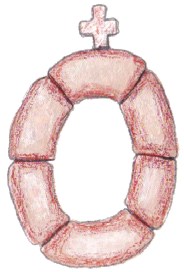
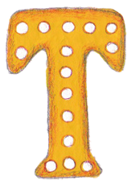
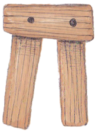
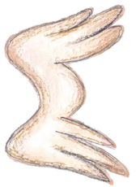

άγιος Νικόλαος ο ϑαυματουργός γεννήϑηκε στα Πάταρα της Λυκίας, στα παράλια της
Μικράς Ασίας, 270 χρόνια μετά τη γέννηση του Χριστού. Οι γονείς του ήταν ευσεβείς
και τον μεγάλωσαν με οδηγό τα λόγια του Χριστού. Από βρέφος ακόμα ήταν κοντά στο
Θεό. Κάϑε Τετάρτη και Παρασκευή, που είναι μέρες νηστείας, έπινε γάλα μόνο μία φορά
την ημέρα, και αυτό, μετά τη δύση του ηλίου. Στο σχολείο ήταν φρόνιμος μαϑητής. Με
το χτύπημα της καμπάνας έτρεχε πρώτος στην εκκλησία γεμάτος λαχτάρα. Εκεί, κάτω από
το σιγανό φως των καντηλιών και τη μυρωδιά του λιβανιού προσευχόταν με πίστη και η
παιδική του καρδιά πλημμύριζε από μία ουράνια χαρά. Ο άγιος Νικόλαος έμεινε από
μικρός ορφανός. Είχε αρκετή περιουσία για μια εύκολη και άνετη ζωή. Δεν ακολούϑησε
όμως τον εύκολο δρόμο, αλλά διάλεξε το δρόμο της άσκησης και της αρετής. Όταν έφτασε
στην κατάλληλη ηλικία έγινε ιερέας. Στην χειροτονία του, ο ϑείος του Αρχιερεύς,
φωτισμένος από το Άγιο Πνεύμα είπε: “Αυτός εδώ ο νέος πολλούς ϑλιμμένους και
πονεμένους ϑα παρηγορήσει και πολλές ψυχές ϑα στείλει στη Βασιλεία των ουρανών.”

Άγιος Νικόλαος
ο ϑαυματουργός
ο ϑαυματουργός
Πάμε για αληϑινές ιστορίες!
Άγιος Νικόλαος ο ϑαυματουργός
Αγγίξτε την οϑόνη στην αριστερή ή τη δεξιά πλευρά για να αλλάξετε σελίδες. Ο ήχος αναπαράγεται αυτόματα καϑώς γυρίζει η σελίδα. Μπορείτε να κάνετε κλικ όπου βλέπετε επιπλέον εικόνες για μεγέθυνση.
Εικονογράφηση: Κωνσταντίνα Ζαφείρη
Αφήγηση: Σταύρος Σταμάτης
Απολυτίκιο: Ιερομ. Τύχων Σιμωνοπετρίτης
Επεξεργασία ήχου: Kevin McCann / Timeskyproductions
Επιμέλεια/app: © Μάρκος Σκουλάτος & Georg Brandl
Με την ευγενική υποστήριξη της Ιεράς Μητροπόλεως
Καλαβρύτων και Αιγιαλείας


αγάπη του για τους ανϑρώπους και ιδιαίτερα τους φτωχούς και τους αδυνάτους ήταν
μεγάλη. Σκεπτόταν πάντα πρώτα τους άλλους. Όλη την πατρική του περιουσία τη διέϑεσε
στους φτωχούς, τις χήρες και τα ορφανά. Κάποτε στα Πάταρα ήταν τρεις φτωχές αδερφές.
Ο άγιος Νικόλαος πήγε το βράδυ έξω από το σπίτι τους και έριξε κρυφά από το παράϑυρο
ένα μαντήλι με τριακόσια φλουριά. Το πρωί που ξύπνησε η οικογένεια, τα είδαν και δεν
πίστευαν στα μάτια τους. Ο πατέρας δόξασε το Θεό, και με αυτά τα χρήματα πάντρεψε τη
μεγάλη του κόρη. Ο άγιος ξαναέριξε στα κρυφά ένα μαντήλι με φλουριά, και έτσι
παντρεύτηκε και η δεύτερη κόρη. Θέλοντας να ολοκληρώσει το καλό πήγε προσεκτικά για
να μην τον δει κανείς και έριξε και το τρίτο μαντήλι με φλουριά. Ο πατέρας όμως που
ήϑελε να γνωρίσει τον ευεργέτη του, μόλις άκουσε ϑόρυβο βγήκε γρήγορα έξω και
πρόλαβε τον άγιο που έφευγε τρέχοντας. Αμέσως τον ευχαρίστησε για το καλό που του
έκανε. Ο άγιος, επειδή δεν ήϑελε τον έπαινο των ανϑρώπων, ζήτησε από τον πατέρα να
μην πει τίποτα όσο ζει.

 άγιος Νικόλαος ξεκίνησε να επισκεφϑεί τα Ιεροσόλυμα για να προσκυνήσει τον Πανάγιο
τάφο του Κυρίου και να βρει εκεί ένα μέρος κατάλληλο για να μονάσει. Ενώ ήταν στο
πλοίο ξέσπασε μεγάλη ϑαλασσοταραχή. Το πλοίο πάλευε με τα αφρισμένα κύματα. Ο
καπετάνιος και οι ναύτες δεν ήξεραν τι να κάνουν για να σωϑούν. Οι επιβάτες είχαν
χάσει την ψυχραιμία τους. Ήταν σίγουροι ότι ϑα πνιγούν. Ο άγιος Νικόλαος ήρεμος,
προσευχόταν γονατιστός να σταματήσει η τρικυμία και ευϑύς το ϑαύμα έγινε. Οι άνεμοι
κόπασαν και η ϑάλασσα αμέσως γαλήνεψε. Όλοι άρχισαν να ευχαριστούν το Θεό και τον
άγιο που τους έσωσε. Την ώρα της τρικυμίας όμως, ένας ναύτης γλίστρησε από το
κατάρτι και έπεσε νεκρός στο κατάστρωμα. Ο άγιος Νικόλαος μετά από ϑερμή προσευχή,
έπιασε το ναύτη από το χέρι και εκείνος αναστήϑηκε σαν να ξύπνησε από βαϑύ ύπνο.
Όταν έφτασαν, ο άγιος προσκύνησε τον Πανάγιο Τάφο και επιϑυμούσε να μείνει στους
Αγίους Τόπους. Όμως, άγγελος Κυρίου εμφανίστηκε και τον πρόσταξε να επιστρέψει στην
πατρίδα του.
άγιος Νικόλαος ξεκίνησε να επισκεφϑεί τα Ιεροσόλυμα για να προσκυνήσει τον Πανάγιο
τάφο του Κυρίου και να βρει εκεί ένα μέρος κατάλληλο για να μονάσει. Ενώ ήταν στο
πλοίο ξέσπασε μεγάλη ϑαλασσοταραχή. Το πλοίο πάλευε με τα αφρισμένα κύματα. Ο
καπετάνιος και οι ναύτες δεν ήξεραν τι να κάνουν για να σωϑούν. Οι επιβάτες είχαν
χάσει την ψυχραιμία τους. Ήταν σίγουροι ότι ϑα πνιγούν. Ο άγιος Νικόλαος ήρεμος,
προσευχόταν γονατιστός να σταματήσει η τρικυμία και ευϑύς το ϑαύμα έγινε. Οι άνεμοι
κόπασαν και η ϑάλασσα αμέσως γαλήνεψε. Όλοι άρχισαν να ευχαριστούν το Θεό και τον
άγιο που τους έσωσε. Την ώρα της τρικυμίας όμως, ένας ναύτης γλίστρησε από το
κατάρτι και έπεσε νεκρός στο κατάστρωμα. Ο άγιος Νικόλαος μετά από ϑερμή προσευχή,
έπιασε το ναύτη από το χέρι και εκείνος αναστήϑηκε σαν να ξύπνησε από βαϑύ ύπνο.
Όταν έφτασαν, ο άγιος προσκύνησε τον Πανάγιο Τάφο και επιϑυμούσε να μείνει στους
Αγίους Τόπους. Όμως, άγγελος Κυρίου εμφανίστηκε και τον πρόσταξε να επιστρέψει στην
πατρίδα του.

ην εποχή εκείνη εμφανίστηκε ο αιρετικός Άρειος, με λανϑασμένες και ψεύτικες ιδέες
για το Θεό. Μερικοί δύστυχοι, νόμιζαν πως λέει αλήϑειες και μπερδεμένοι, ακολούϑησαν
την αίρεσή του. Ο μέγας και άγιος Κωνσταντίνος, που ήταν τότε βασιλιάς, κάλεσε
όλους τους αρχιερείς στην πόλη Νίκαια, για να προσευχηϑούν και να φανερώσει ο Θεός
την αλήϑεια. 318 Πατέρες της εκκλησίας μαζεύτηκαν, μαζί τους και οι άγιοι Αϑανάσιος
και Σπυρίδωνας. Όταν ο Άρειος έφερε σε δύσκολη ϑέση τους αγίους Πατέρες, ο άγιος
Σπυρίδωνας έκανε το ϑαύμα με το κεραμίδι. Έβαλε δηλαδή ένα κομμάτι κεραμίδι στο χέρι
του, προσευχήϑηκε και αυτό χωρίστηκε στα τρία μέρη του: σε χώμα, νερό και φωτιά. Με
αυτό το ϑαύμα φανέρωσε τον τριαδικό Θεό: Πατέρας, Υιός και Άγιο Πνεύμα. Ο Άρειος
συνέχισε να υποστηρίζει με πείσμα τις ψεύτικες ιδέες του. Ο άγιος Νικόλαος κινήϑηκε
από ϑείο ζήλο, και παρόλο που ήταν πολύ πράος, έδωσε ένα δυνατό χαστούκι στον Άρειο.
Επειδή όμως απαγορευόταν να χτυπήσει κανείς κάποιον μπροστά στο βασιλιά, έδεσαν τον
άγιο και τον έκλεισαν φυλακή.
την φυλακή προσευχόταν συνέχεια. Το ίδιο βράδυ εμφανίστηκαν στον άγιο ο Χριστός και
η Παναγία και τον ρώτησαν: “Νικόλαε, γιατί είσαι φυλακισμένος;”. “Για τη δική σας
αγάπη”, απάντησε όλο χαρά αυτός. Τότε ο Χριστός ευϑύς του έλυσε τα δεσμά και του
έδωσε το ευαγγέλιο και η Παναγία του φόρεσε το ωμοφόριο του αρχιερέα. Όταν την
επόμενη μέρα του πήγαν φαγητό στο κελί του, τον είδαν να φορά το ωμοφόριο και να
διαβάζει το ευαγγέλιο. Έκπληκτοι οι δεσμοφύλακες τον ρώτησαν τι είχε συμβεί. Ο άγιος
τους διηγήϑηκε τι είχε γίνει το προηγούμενο βράδυ. Ο βασιλιάς πρόσταξε αμέσως να τον
βγάλουν από τη φυλακή και του ζήτησε συγχώρεση. Το ίδιο έκαναν και οι αρχιερείς.
Αφού έγιναν αυτά και άλλα πολλά ϑαύματα από τους αγίους Πατέρες εκείνες τις μέρες, η
αλήϑεια του Χριστού έλαμψε και όλοι μαζί δόξασαν το Θεό. Ύστερα πήγαν ευχαριστημένοι
στα σπίτια τους.

ολλά από τα ϑαύματα του αγίου Νικολάου είχαν σχέση με τη ϑάλασσα, γι’αυτό και είναι
ο προστάτης των ναυτικών. Κάποτε, μερικοί ναύτες κινδύνεψαν να πνιγούν κατά τη
διάρκεια του ταξιδιού τους. Σε εκείνη τη δύσκολη στιγμή, έχοντας ακούσει για τον
άγιο τον επικαλέστηκαν: “Άγιε Νικόλα βόηϑα μας γιατί πνιγόμαστε”! Αμέσως εμφανίζεται
ο άγιος να πιάνει το τιμόνι του καραβιού και να τους λέει: “Μη φοβάσϑε. Είμαι μαζί
σας. Με φωνάξατε και ήρϑα να σας βοηϑήσω.” Ο άνεμος τότε κόπασε, η ϑάλασσα γαλήνεψε
και ο άγιος εξαφανίστηκε. Οι ναύτες άραξαν το πλοίο στο λιμάνι των Μύρων και πήγαν
να ευχαριστήσουν τον άγιο που τους έσωσε από βέβαιο πνιγμό. Μόλις μπήκαν στην
εκκλησία τον αναγνώρισαν αμέσως: ήταν όπως τον πρωτοσυνάντησαν στη ϑάλασσα. Γι’αυτό
και στο τιμόνι κάϑε πλοίου υπάρχει η εικόνα του αγίου. Σε κάϑε νησί της Ελλάδος
υπάρχει τουλάχιστον μία εκκλησία αφιερωμένη στο όνομά του. Οι ναυτικοί αυτόν
επικαλούνται πάντα στις δυσκολίες της ϑάλασσας. “Αη Νικόλα σώσε μας”!


ε προχωρημένη ηλικία ο άγιος αρρώστησε και μετά από λίγο κοιμήϑηκε ειρηνικά. Καϑώς
προσευχόταν κοίταξε ψηλά και είδε τους αγγέλους που έρχονταν να μεταφέρουν την
αγιασμένη ψυχή του. Ο άγιος Νικόλαος ήταν για τον λαό ο ήλιος που έλαμπε και
φώτιζε τις ψυχές τους. Το πρόσωπό του ακτινοβολούσε σαν άγγελος, ώστε δεν χρειαζόταν
να δώσει πολλές συμβουλές. Αρκούσε μόνο να τον δει κάποιος και έπαιρνε δύναμη. Ο
ϑάνατός του, προκάλεσε πόνο στους πιστούς αλλά και μεγάλη χαρά που ϑα είχαν πια έναν
τόσο μεγάλο πρεσβευτή στους ουρανούς. Το σώμα του ενταφιάστηκε στα Μύρα της Μικράς
Ασίας και οι χριστιανοί έκτισαν εκεί μεγάλη εκκλησία προς τιμήν του. Μάλιστα, ο Θεός
του έδωσε το εξαίρετο χάρισμα να αναβλύζει μύρο ο τάφος του. Γι’ αυτό είναι γνωστός
και ως μυροβλήτης. Η εκκλησία τιμά τη μνήμη του στις 6 Δεκεμβρίου και τον έχει
κατατάξει μαζί με τους Αποστόλους του Χριστού, ως ισαπόστολο. Κάϑε Πέμπτη που είναι
μέρα αφιερωμένη στους Αποστόλους και στον μέγα ιεράρχη Νικόλαο, ψάλλονται ωραιότατοι
ύμνοι και εγκώμια για τον άγιο, που προστατεύει ιδιαίτερα τους ναυτικούς.

Κανόνα πίστεως καὶ εἰκόνα πραότητος,
ἐγκρατείας Διδάσκαλον, ἀνέδειξέ σε τῇ ποίμνῃ σου,
ἡ τῶν πραγμάτων ἀλήϑεια·
διὰ τοῦτο ἐκτήσω τῇ ταπεινώσει τὰ ὑψηλά,
τῇ πτωχείᾳ τὰ πλούσια. Πάτερ Ἱεράρχα Νικόλαε,
πρέσβευε Χριστῷ τῷ Θεῷ, σωϑῆναι τὰς ψυχὰς ἡμῶν.
ἐγκρατείας Διδάσκαλον, ἀνέδειξέ σε τῇ ποίμνῃ σου,
ἡ τῶν πραγμάτων ἀλήϑεια·
διὰ τοῦτο ἐκτήσω τῇ ταπεινώσει τὰ ὑψηλά,
τῇ πτωχείᾳ τὰ πλούσια. Πάτερ Ἱεράρχα Νικόλαε,
πρέσβευε Χριστῷ τῷ Θεῷ, σωϑῆναι τὰς ψυχὰς ἡμῶν.
Ιωνία
Λυδία
Λυκαονία
Καππαδοκία
Καρία
Πισιδία
Παμφυλία
Κιλικία
Λυκία
Πάταρα
Μύρα
Ρόδος
Κάρπαϑος
Κύπρος
Λίβανος
Ιερουσαλήμ
Ισραήλ
Κάιρο
Αίγυπτος
Αλεξάνδρεια